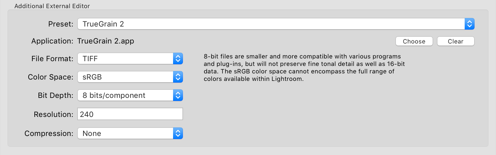

Workflow
TrueGrain supports two main workflows: one-step and two-step.
In the one-step process, you do all your image processing first with your color (or grayscale) source image outside TrueGrain. Then, as a last step, you process the image through TrueGrain.
For the two-step approach, you use TrueGrain to convert your color source image to grayscale without adding grain. Then you process the resulting grayscale image outside TrueGrain (retouch, sharpen, etc.), and return to TrueGrain for applying the grain as the final step.
The one-step process has the advantage of simplicity and is suitable for many applications. The two-step process provides more control. Ultimately, it is a question of whether you prefer to retouch the source image in color or converted to grayscale.
One-step workflow
- Prepare a color (or grayscale) image in Photoshop or another application
- Save the image as a TIF file (see Source imagery, below, for tips)
- Open the TIF file in TrueGrain
- Choose the film type (see Grain Library)
Two-step workflow
- Prepare a color image in Photoshop or another application
- Save the image as a TIF file (see Source imagery, below, for tips)
- Open the TIF file in TrueGrain
- Choose the film type (see Grain Library)
- Disable the Film Grain panel entirely
- Make any creative adjustments to the spectral response or dynamic range based on the real-time preview
- Choose “Save” or “Save As” from the File menu to save your converted image without grain
- Process the grayscale image externally, such as in Photoshop, re-saving as a TIF file when done
- Re-load the TIF file in TrueGrain, as above
- Disable Dynamic Range panel entirely and re-enable the Film Grain panel
- On the Film Grain tab, select the desired grain scale (the default is usually 35mm, but most films go all the way up to 6x8)
- Make any creative adjustments to the spectral response, dynamic range, or grain scale based on the real-time preview
- Choose “Save” or “Save As” from the File menu to save your final image
- On the Film Grain tab, select the desired grain scale (the default is usually 35mm, but most films go all the way up to 6x8)
- Make any further creative adjustments based on the real-time preview
- Choose “Save” or “Save As” from the File menu to save your final image
Source imagery
TrueGrain can open color or grayscale uncompressed TIF files with 8-bits or 16-bits per channel, or JPG files.
TrueGrain will honor whatever ICC profile is embedded in the source image. There is no need to deviate from whatever working space you have adopted in Photoshop or Lightroom.
In terms of color resolution, the quality of the image brought into TrueGrain for processing can significantly affect the results. The more information in the original image the better the conversion, meaning that at an unfiltered image with 16 bits per channel is preferable.
For most users, the optimal path will be as follows:
- Begin with an untouched RAW image.
- If necessary, adjust the white balance as you would if you were producing a color image.
- If necessary, adjust the exposure as you would if you were producing a color image.
- Export the image at full resolution as a 16-bits per channel TIF file with the ICC profile of your working space.
In terms of spatial resolution, the amount of detail in your source image needs to have some reasonable relationship with the grain you will be applying in TrueGrain. With today’s cameras, it’s not that hard to produce an image with more detail than a film camera of comparable frame size could have ever produced. Given the grain samples in TrueGrain were scanned at 4000 dpi, the following are the theoretical maximum resoulutions you would want your source imagery to be, depending on the film size you wish to simulate:
| 110 | 2362 x 1732 |
| 135 | 5354 x 3465 |
| 6x4.5 | 7874 x 6250 |
| 6x6 | 7874 x 7874 |
| 6x8 | 11340 x 7874 |
If you’re going for really large grain structure and you feel you’re seeing too much image detail amidst the grain in the TrueGrain preview, you might want to try scaling your source image down before processing it.
Output imagery
TrueGrain outputs a 16-bit monochrome TIF file with an embedded Gray Gamma 2.2 ICC profile.
Batch processing

TrueGrain 1.2 provides a straightforward batch processing facility.
- Prepare two or more color (or grayscale) images in Photoshop or another application.
- Save the images as TIF files in a folder.
- Load one image, and adjust the settings for the desired effect.
- Save a new preset containing all the settings.
- Choose the “Batch…” option from the File dropdown.
- From the file picker, select the files prepared in steps 1 and 2.
- From the ensuing dialog box, choose the preset from step 4 and adjust the output path to your liking.
- Click the Run button and walk away for a bit.
Using TrueGrain with Adobe Photoshop Lightroom
Lightroom can be configured to use TrueGrain as an external editor. Simply configure Lightroom’s External Editing preferences panel as below:

A few limitations of which you should be aware:
- TrueGrain can only edit a single image at a time. If you select multiple images in Lightroom and send them to TrueGrain, only the first will actually get processed.
- Lightroom automatically flattens the keyword hierarchy when it routes an image through an external editor other than Photoshop. If you use hierarchical keywords, you may find that the image you get back from TrueGrain will need its keywords corrected.
- Lightroom automatically omits some IPTC fields when it routes an image through an external editor other than Photoshop. If you use IPTC fields such as Location, you may find that the image you get back from TrueGrain will need some IPTC fields corrected.
Next pages:
Previous pages: